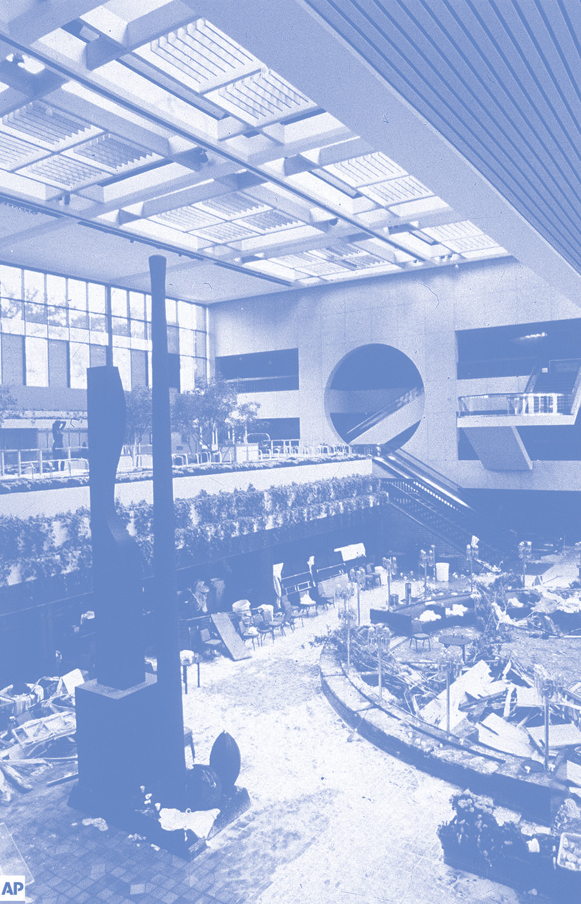
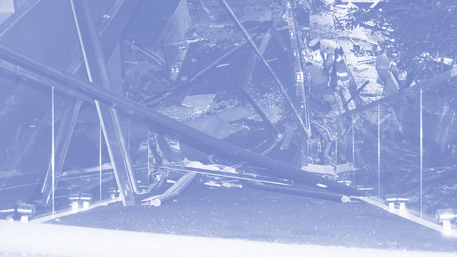
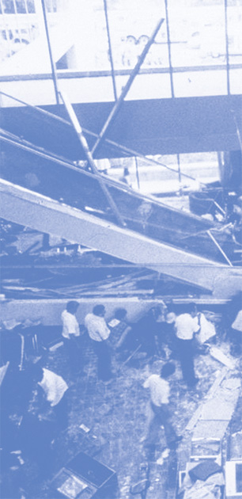
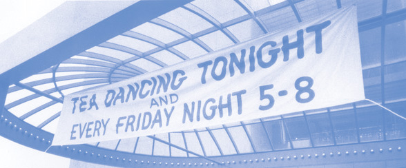
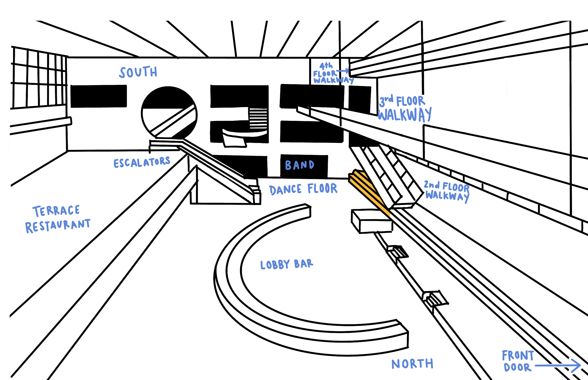
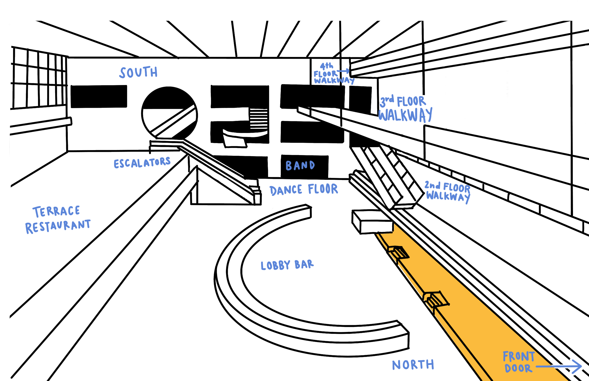
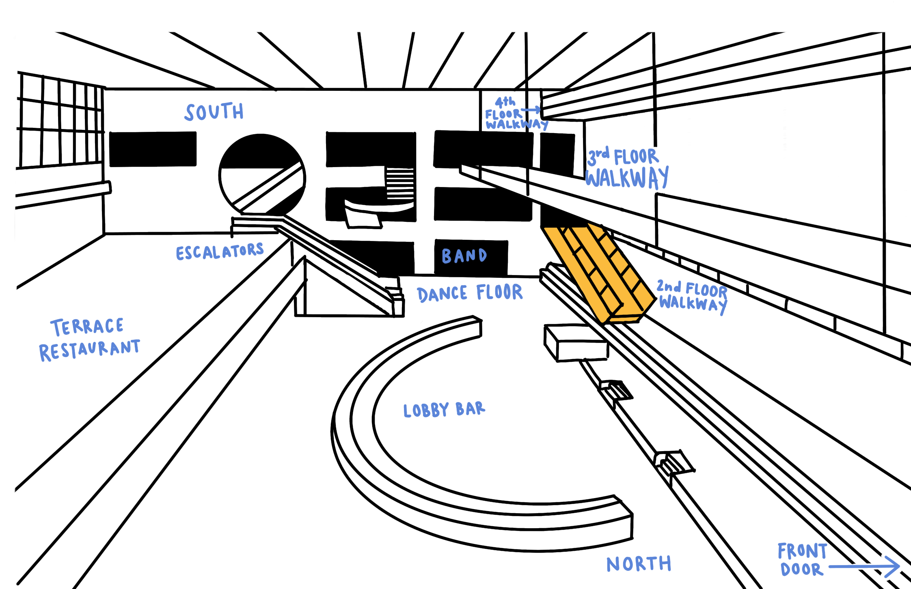

cataclysm
the hyatt regency walkway collapse



introduction
what happened on july 17, 1981

The Hyatt Regency in downtown Kansas City was hosting a tea dance in their lobby.
Guests included those staying in the hotel, as well as local dance enthusiasts. The
event was hosted by the hotel every Friday, and attracted a lot of regular attendees.
As some guests danced on the main floor, some guests flocked to the hotel’s famous walkways that
spanned across the lobby, each leading to a different floor of the hotel.
part one
part two
part three
At around 7:05 pm, the guests that were watching the dance from the walkways
reported hearing loud, out of place popping noises, followed by loud cracks.
Before guests could even move to make their way off of the suspended walkways,
the fourth floor walkway fell slightly, stopped for a moment, and then plummeted onto
the second floor walkway, bringing both of them to the ground. Spectators and dancers
below the walkways were instantly hit with the 65 ton weight of the walkways, some buried
within the rubble, some killed by the impact.
The first responders arrive on the scene twelve minutes later. Outside,
they turn the front entrance of the hotel into a triage center and turn the accessible
part of the lobby into a makeshift morgue. Those injured who are not pinned under the
crushing weight of the rubble of the two walkways are taken out to the front entrance or
to nearby hospitals to be treated. Even some of the rooms in the hotel were used to house
those who were injured and used to house those who were killed in the tragedy.
stories
who was there



Mark Williams
Property valuer Mark Williams was beside the bar in the lobby on the main floor when the walkways came down on top of him.He was buried so deep within the rubble that he couldn’t hear the people above him working to free those who were trapped. By that time, seven hours after the initial structural disaster, the rescuers were exclusively finding dead bodies among the rubble and were becoming disheartened by those discoveries.
He had been pinned underneath tons of concrete and steel with his legs bent at an awkward angle behind him for almost eight hours and was beginning to lose hope in his chance of getting rescued. He had also just faced the chance of also drowning within the rubble, as the collapse had severed the pipes in the lobby and water was flooding the lobby due to the doors preventing the water from escaping. After the front doors were smashed by rescuers and the water started to pour out onto the street, saving Mark Williams from drowning.
Walter and Shirley Trueblood
Walter and Shirley were there attending their eighth tea dance at the Hyatt that night. Instead of joining in with those who were dancing, they chose to watch from the second floor so they could get a bird’s eye view of the whole event. Suddenly, Walter heard a sharp metallic pop and the second floor walkway dropped somewhere between six and eight inches. He took Shirley’s arm and tried to get both of them off of the skywalk, they took around three steps before the fourth floor walkway collapsed on top of them.
Walter had blacked out from the impact and regained consciousness to find a crushing weight on his chest. The only thing that he could move was his arm, which he used to take off his tie off so that he could have a little more air. He didn’t know if his wife had even survived the fall. He called out for her and eventually she regained consciousness and called back out to him. They couldn’t touch, but they could still talk to each other while buried in the debris.
He heard one of the rescue workers directly above him, taking a jackhammer to a slab of fallen concrete. Mark began to yell and call out for help, but the deafening sound of the power tool drowned out his cries. He needed to make someone hear him before the jackhammer cut through the concrete he was under and injured him even more than he already was, or worse, kill him. Finally, after the jackhammer had gone through the concrete and right in between Mark’s legs, one of the rescue workers heard Mark’s cries for help. At the time that Mark was rescued, he had been confined within the heavy debris of the walkways for almost nine and a half hours.

Doctors had thought that Mark would not recover from his injuries, but he spent two months in intensive care after the incident and then spent months enduring painful rehabilitation due to his serious injuries of a broken back and having both legs torn out of their sockets. Mark recovered and was able to go hunting at the beginning of the next duck season.
Mark Williams was the last person that was found alive within the wreckage in the lobby of the Hyatt Regency hotel.

Two hours after the collapse, they both heard rescue workers close by and yelled for help. They started by attaching steel cables to the beam that was pinning Shirley to the floor and lifted it with a crane. In order to not crush Shirley with the weight of the beam, they had to move very slowly. The rescue workers were talking to Shirley as they were on their way to get her. She remembered telling them that she felt like she was about to faint. The rescue workers told her to hang on, and seconds later, Shirley was freed from underneath the steel beam. Once Shirley was rescued from the rubble, her husband Walter has been recovered successfully too.


Frank Freeman and his boyfriend Roger Grigsby watched the event from the first floor, underneath the second floor walkways. When the walkways fell, Frank had been hit on the back and shoulder by the falling skywalk. He just barely escaped being buried underneath the second and fourth floor wreckage. When the dust had settled, Frank found himself facing the wreckage of the skywalks with the toes of his shoes were barely touching the debris, and his partner Roger was no where to be found.
“
It didn’t look like he’d been hit with anything. He didn’t have any cuts, there were no bruises. It just looked like he was just laying there, sleeping.
”
Frank Freeman
Frank had finally been persuaded to leave the hotel and go to the hospital nearby to receive treatment for his injuries. A call comes in from rescuers saying that they have found a body of a man who resembles Roger and they ask him to identify his partner. Frank said, “It didn’t look like he’d been hit with anything. He didn’t have any cuts, there were no bruises. It just looked like he was just laying there, sleeping. I asked what had happened. They said he had a broken neck.”
In talking about Roger, Frank describes him as an extrovert, saying that he was in his element at that tea dance.There wasn’t anyone he couldn’t hold a conversation with and he talked to strangers like he’d known them his whole life. After the Hyatt Regency walkway collapse, Frank Freeman served as chairman of the memorial foundation for this tragedy.
on Roger Grigsby


Frank Freeman & Roger Grigsby


investigation
cause of the collapse
The conclusions from the investigation conducted by National Bureau of Standards officer Edward Frank were that although the loads on the hanger rods and box beam connections were less than required by Kansas City Building code, the rods were not the cause of the collapse.


The collapse stemmed from a weld rupture in the fourth-floor-walkway-to-roof hanger rod nut within the box beam. This caused the flanges, protruded rims that serve to increase strength of structures, to rotate upward, causing the bolt and nut to fall out of the hole created. The fourth floor walkway’s supports disconnected from the ceiling, and then the 64,000 pound walkway gave way onto the second floor walkway, causing the deaths of 114 people, and injuring 186.